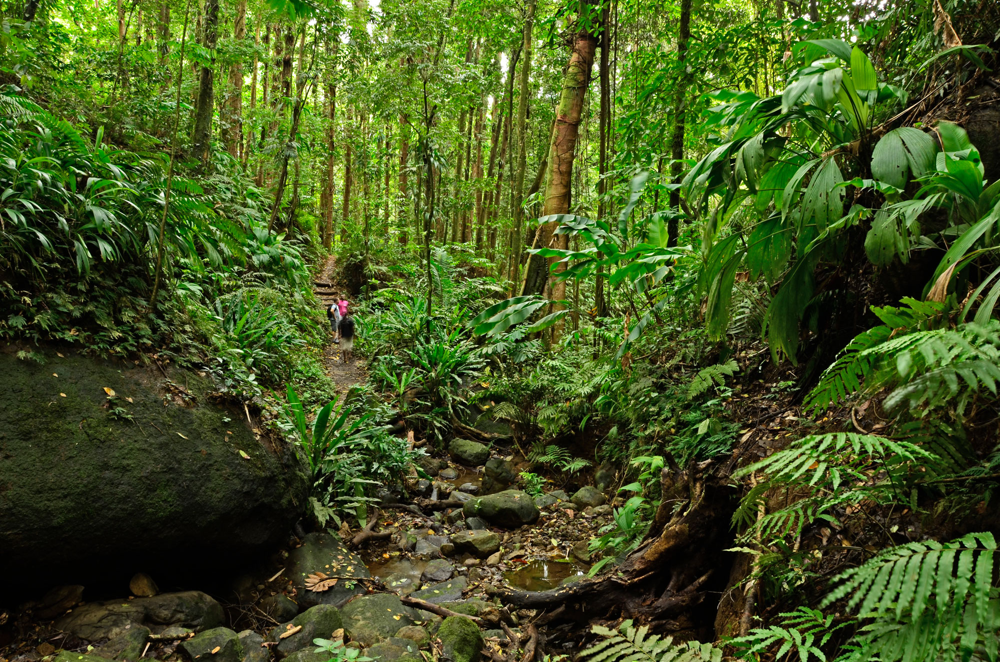

Sightseeing in Taniti
Most tourists spend most of their time in Taniti City, which boasts native architecture and nearby white, sandy beaches that encircle Yellow Leaf Bay. Other popular activities include boat or bus tours of the island, hikes in the rainforest, and visits to Taniti's active volcano.

Beaches
Taniti's white, sandy beaches encircle Yellow Leaf Bay and offer calm waters ideal for swimming, sunbathing, and snorkeling.
Learn More
Rainforest
Explore lush tropical rainforest trails, local wildlife, and canopy zip-lines in Taniti's mountainous interior.
Learn More
Volcano Tours
Taniti's small but active volcano is one of the island's most iconic landmarks — guided tours are available year-round.
Learn MoreTaniti City
The cultural heart of the island, Taniti City features native architecture, local markets, and easy access to Yellow Leaf Bay.
Learn More